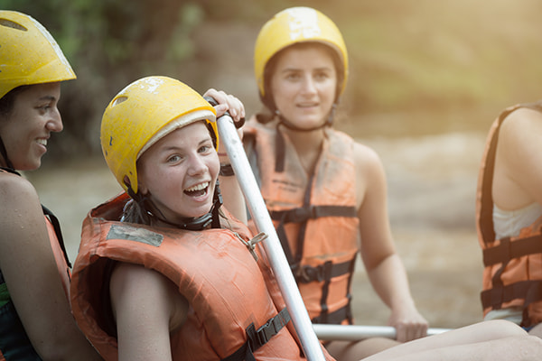
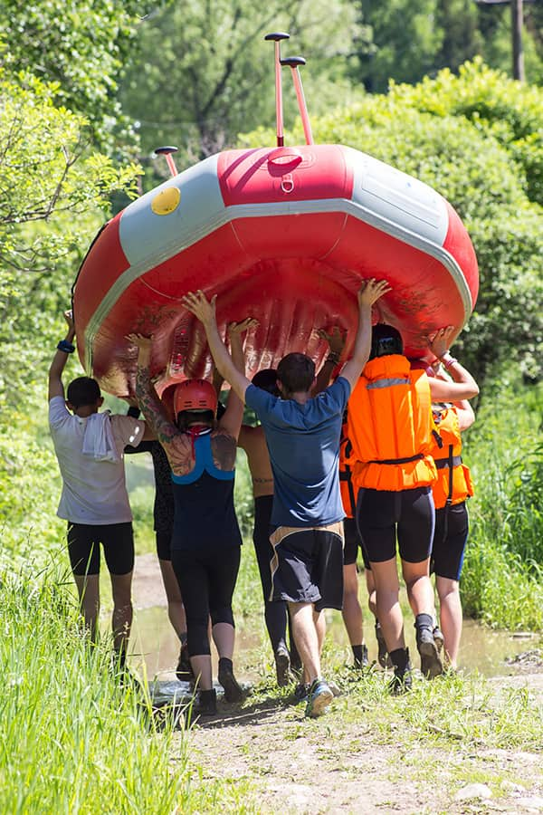
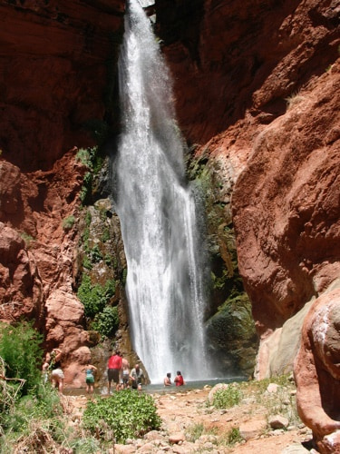

Dry Oar Rafting
History
Dry Oar Rafting was founded over a decade ago by a group of passionate river guides and outdoor enthusiasts who shared a love for adventure and the natural beauty of wild rivers. Beginning with a single raft and a vision, they set out to create a company that emphasized safety, environmental stewardship, and thrilling experiences. What started as small weekend excursions soon grew in popularity, as word spread about their commitment to unforgettable, high-quality rafting trips. From humble beginnings on local rivers, Dry Oar Rafting gradually expanded, adding new routes, experienced guides, and diverse trips for all skill levels.

Today, Dry Oar Rafting is proud to be one of the region’s top white water rafting companies, known for its dedication to both adventure and nature conservation. The company has established a reputation for excellence, not only in the quality of its trips but in its commitment to sustainable practices. Each guide is carefully trained in river safety, local ecology, and wilderness ethics, creating a well-rounded experience for every adventurer. With a deep respect for the rivers they navigate, Dry Oar Rafting continues to grow, bringing new generations closer to the wild beauty of the waterways.
Adventure Awaits You!



